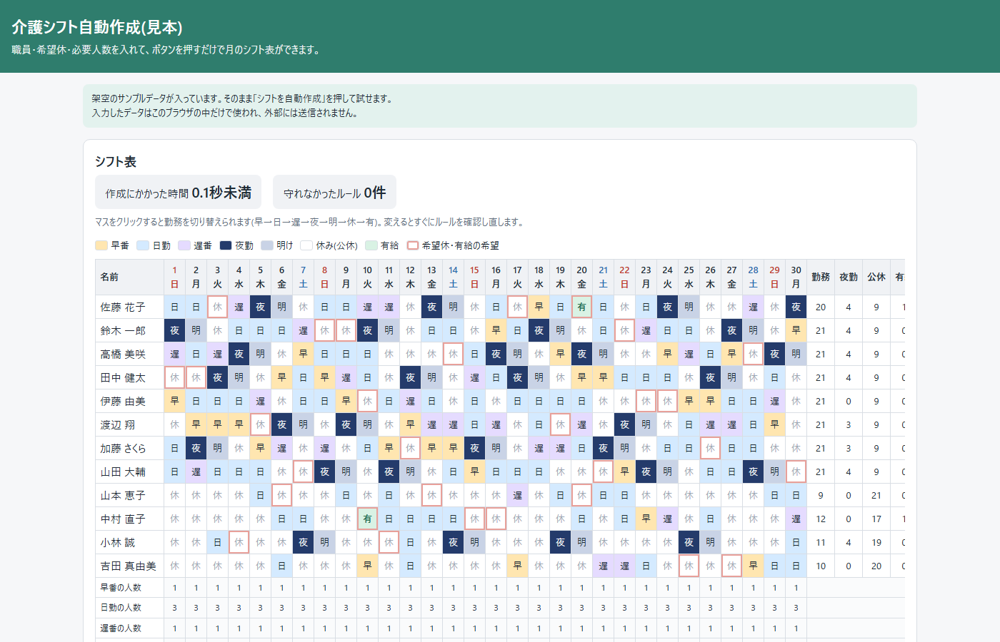

準備中
実績の集計
サービス提供の記録から、利用者別・月別の回数や時間をボタン一つで集計します。
近日公開
準備中
送迎表の作成
利用予定と車・ドライバーの情報から、日ごとの送迎表を作ります。
近日公開
どの見本も、Excel版・Googleスプレッドシート版・Web版の3つの形で作れます。勤務の種類やルールは事業所に合わせて作り変えます。
ここにあるデータはすべて架空です。入力したデータはブラウザの中だけで使われ、外部には送信されません。
ここにあるデータはすべて架空です。入力したデータはブラウザの中だけで使われ、外部には送信されません。